GQ Studio takes the data you already have, resolves it into records you can stand behind, and serves it to your applications and agents through a single governed path. When someone asks where a number came from, the answer is already there, and it is signed.
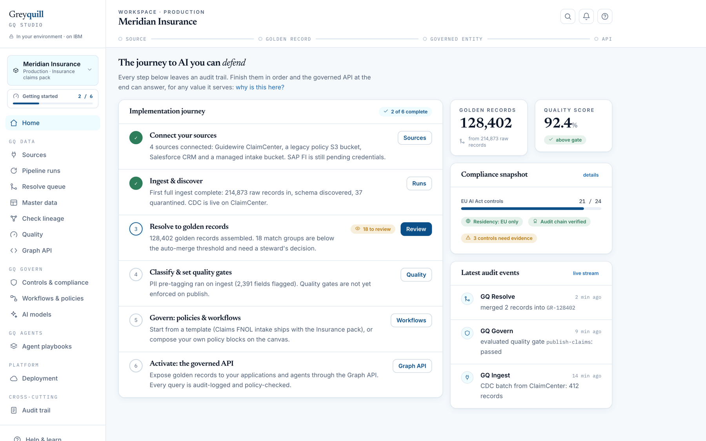
Screens on this page are from a working product preview. The data shown is a sample insurance workspace, not a customer's.
Most AI programmes get the model right. What stops them is the review. Someone in risk or internal audit asks where a figure came from, and answering means pulling exports from four systems and reconstructing the path by hand. That takes weeks, and the momentum behind the project usually does not survive it.
The EU AI Act has turned that question into a legal one. It expects training data you can trace, human oversight on high-impact decisions, and technical documentation that matches how the system actually runs. Most data platforms were never designed to answer on demand, so the evidence gets assembled by hand every time somebody asks for it.
We built GQ Studio around the evidence instead. The audit trail is not something you generate at the end of a quarter. The platform writes it as it works, and everything else reads from it.
Every record moves through the same four stages, and each hop is signed as it happens. Wherever you are in the product, you can see how far a value has come.
You connect the systems you already run. Whatever arrives is kept as an immutable copy, with the time it landed.
Duplicates across those systems collapse into one record per real entity. The reason each field survived is kept with it.
Policy attaches to the record. Who can read which field, from which region, in full or masked.
Applications, models and agents read through one interface that applies the policy as they query.
GQ Studio is the single place your people work. Underneath it the platform is built in three layers, and they go in that order because each one depends on the last.
Sources, resolution into golden records, master data, lineage, quality and the Graph API. This is the layer that makes everything above it provable, and it stands on its own as a product.
Controls mapped to obligations, the canvas where policy gets composed, oversight of the models, and the signed packs you hand to a regulator. It reads everything it needs from GQ Data.
Playbooks that do real industry work through the Graph API, inside the policies you composed, with every step on the trail. This is the layer we are building next.
The order is the whole argument. Structure and prove the data, then govern it, then let agents act on it. Programmes that start at the agent and work backwards are the ones that end up with results nobody can defend.
Data engineers, stewards, compliance officers and AI engineers all work in the same place, on the same records, against the same trail.
Everything starts here. You point the workspace at your systems of record, or create managed storage inside it when there is nothing to point at yet.
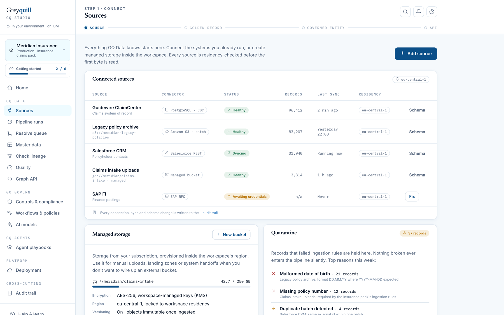
Matching handles most of the volume on its own. What is left is judgement, so the product puts it in front of a person.
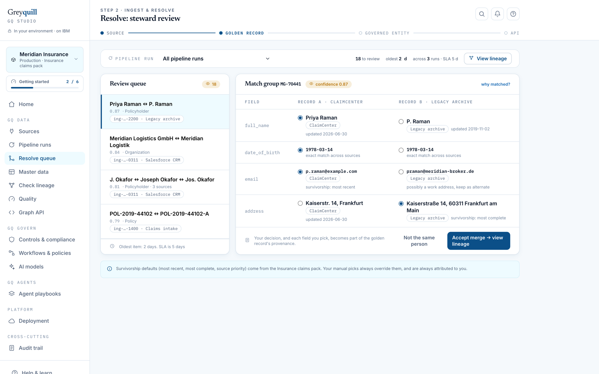
You give the box an identifier. A whole record, a single field, a business key, a particular load. It returns the entire path.
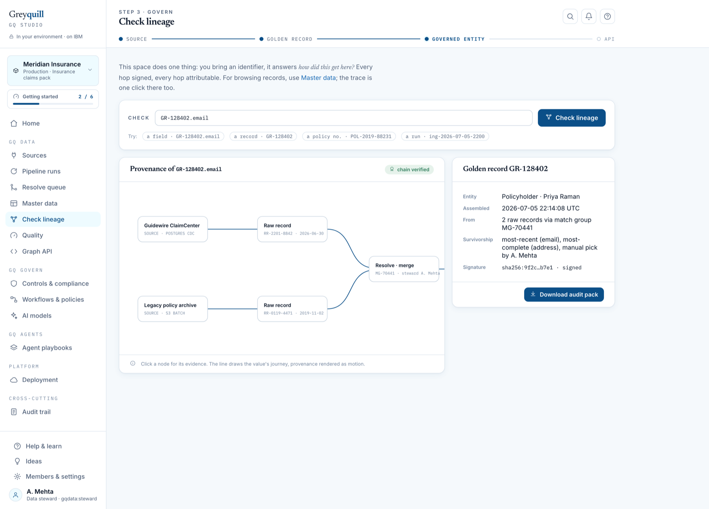
The page answers one question. Are we compliant right now? Controls evaluate continuously against live data rather than against last quarter's screenshots.
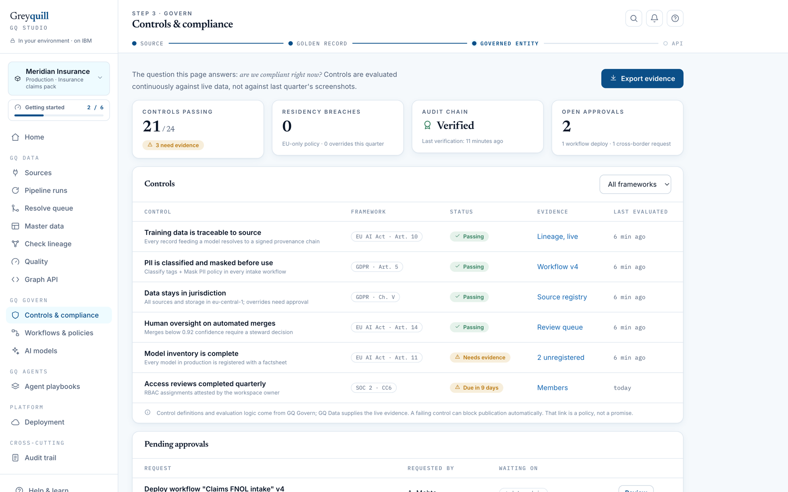
Every golden record is scored continuously on completeness, accuracy, consistency, timeliness, uniqueness and validity. The score is not decoration. It decides what the API will hand out.
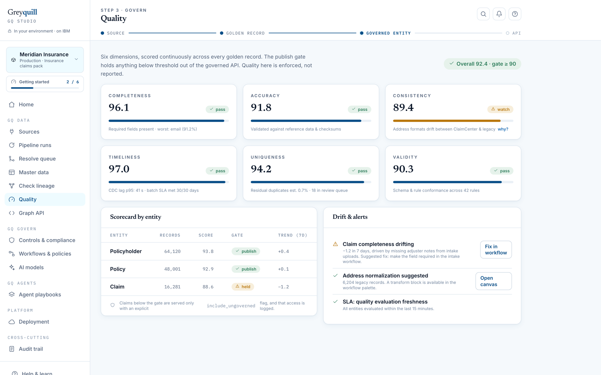
One continuous record of what the platform and the people using it actually did, written so a reviewer can read it.
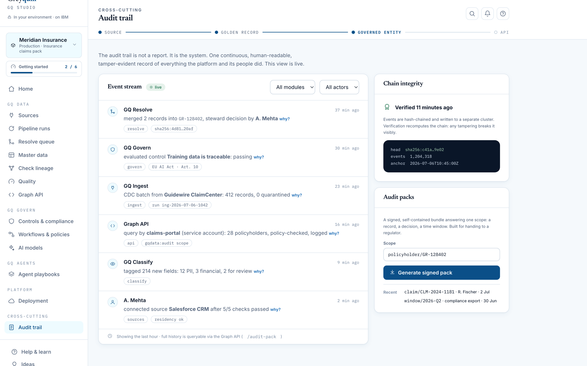
Business rules live somewhere your team can read them. When something genuinely needs code, there is a governed way to add it.
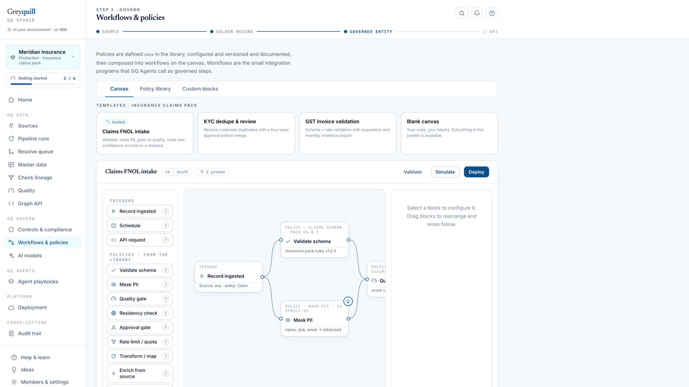
Applications and agents read their context through the Graph API. Policy applies as the query runs, and every request lands in the audit trail.
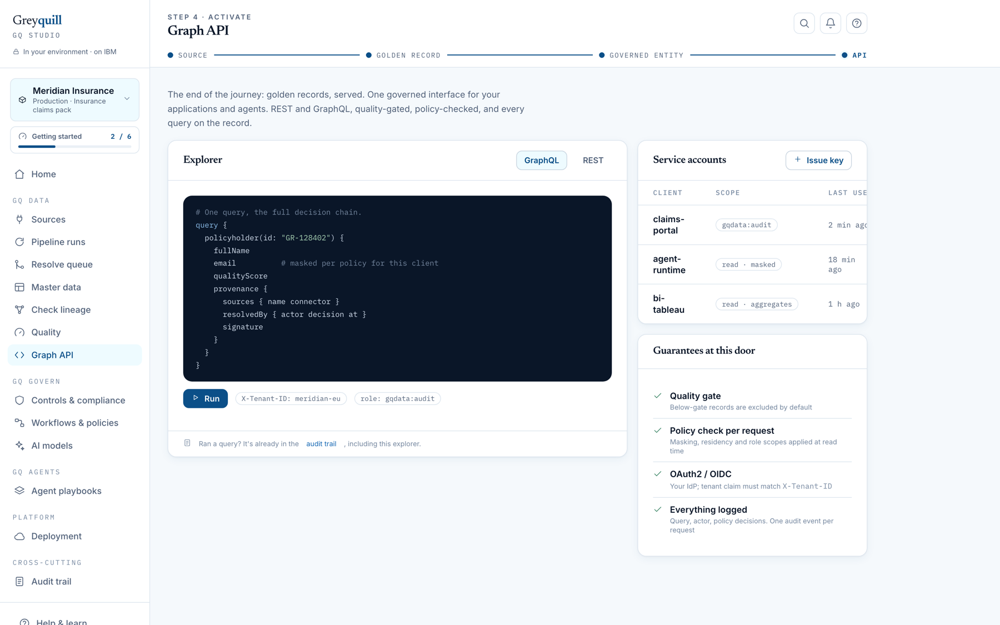
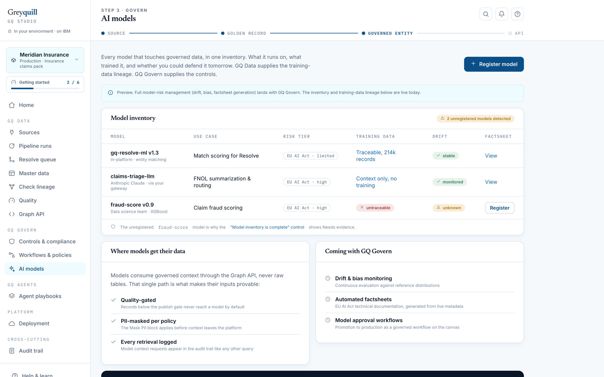
This is the layer we are building next, and it only makes sense in this order. An agent is never more defensible than the data and the policy underneath it.
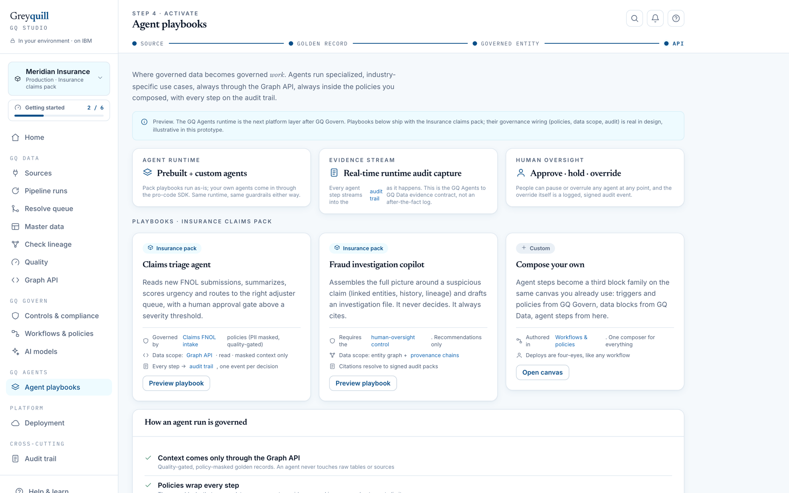
Greyquill installs into your environment. Your cloud account, your region, your identity provider, your keys. Nothing has to leave in order to be governed.
It deploys into an account you own and can audit. The major clouds are supported, and the pattern is the same on each of them.
Where data is allowed to live gets verified when a source is connected, then enforced on every read after that.
Golden records, lineage and the audit trail export in open formats whenever you want them.
Teams stop rebuilding entity resolution and access policy for every new project. They read governed context through one API, and the governance arrives with it.
Evidence work moves from repeated manual effort to a query somebody runs. Where a specialised model suits a node, it can run on hardware you own, which turns a per-call bill into a fixed one.
Control status is current, the evidence is already attached, and any record's history exports as a signed pack. You walk into the review holding the answers.
Vertical packs. The platform underneath is the same everywhere. What changes by industry is the pack: the entity model, the survivorship defaults, the control set and the workflows you start from. Insurance claims is the first one. A pack is configuration rather than a fork, so you keep getting platform improvements as they land.
No, and we would push back if someone suggested it. GQ Studio sits alongside them. It reads from your systems of record and serves governed entities out. Your warehouse carries on doing analytics with the same data.
No. The platform deploys into your own environment and reads in place. Raw copies stay in your region, under your keys, in an account you control.
Most of our conversations start there. A catalogue tells you what exists and roughly where it came from. This answers what happened to one specific value, at field level, signed, and gives you the evidence pack to hand over. They coexist comfortably.
Then you are ahead. Bring your existing survivorship rules in as pack configuration and the resolution layer will use them rather than asking your stewards to relearn anything.
It depends on how many sources are in scope and how settled your entity definitions are. We aim at one governed entity serving through the API as the first milestone, because that proves the whole chain end to end. Migrating an entire estate is a much later conversation.
Yes, and for a lot of nodes you should. Where a specialised model does the job, it can run on a machine you own, which changes the cost from a per-call bill into a fixed one.
Your golden records, the lineage and the full audit trail export in open formats whenever you ask. The evidence is yours, not something you rent from us.
When a person acts in GQ Studio, the trail records exactly who they were. Agents should meet the same standard, and today most of them do not.
An agent typically calls an API using a service account, so what the log records is the service. Not which agent it was, not who it was acting for, and not what authority it had been given. That is a real problem once an agent can move money, close a claim or release a record, because the oversight obligation is written about accountable actions and a shared service account cannot tell you who was accountable.
We are working with Synthera on VAID, an open standard for verifiable agent-action identity. Rather than putting a broker in the middle, VAID specifies the bytes. A request is canonicalised with RFC 8785, hashed with SHA-256, then signed with Ed25519. Any client that follows the specification produces a signature that any conforming verifier accepts, across languages, with no shared runtime and no network service in between.
The part that matters for governance is delegation. A VAID is bound to a specific action, and it can be attenuated when it is handed on, so an agent can be given strictly narrower authority than the person who delegated it, and that narrowing is inside the signed object rather than in a config file somewhere. Signatures carry a timestamp and a nonce so they cannot be replayed, and they expire on a short lifetime by default.
For GQ Studio this closes the last gap. The chain is already signed from the source system through resolution to the governed entity. VAID signs the caller at the far end, so "which agent read this record, acting for whom, under what authority" gets answered the same way "which steward merged this record" already does.
Greyquill is an enterprise AI consulting firm and an IBM Business Partner, based in Bengaluru, working with regulated organisations across banking, insurance, retail and telecom.
The people building this have spent their careers delivering data and AI programmes inside large, audited enterprises. That is the reason the product looks the way it does. Most of the decisions behind these screens came out of an argument about what an auditor would actually accept, which is a different question from what would demo well.
We are a consulting firm as much as a product team, and at this stage that matters. Getting a governed foundation in place is part product and part method. We do both, and we would rather be in the room while you do it.
GQ Studio is in product preview, and a small number of early clients are already running it with us. We are keeping that group deliberately small, because at this stage we work alongside your team rather than handing over a licence and a manual and wishing you luck.
In practice that means we help stand it up in your environment, shape the vertical pack around how your domain actually works, and stay reachable while your people get used to it. When something needs changing, you are talking to the person who will change it, not to a queue.
If your AI programme is held up by someone asking you to prove where the data came from, it is worth a conversation.
Book a demoThirty minutes, and we will walk you through the product on a real workspace. Or write to hello@greyquill.io.